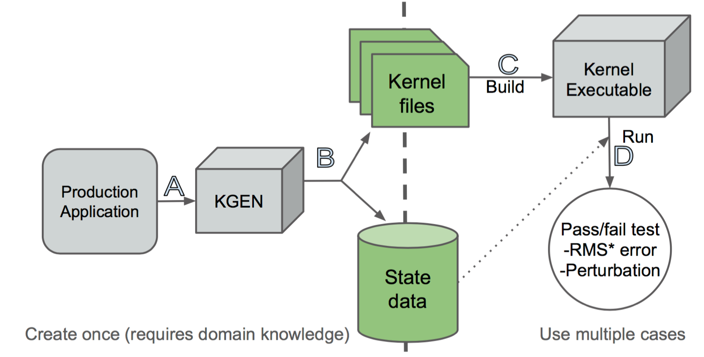

User Guide¶
1. Introduction¶
KGen is a Python tool that extracts Fortran statements from a larger software and combines the extracted statements as a stand-alone application, aka kernel. It also saves input and output data that are used in the kernel for execution and verification purpose. From KGen version 0.8, KGen also can produce information about code coverage and PAPI counter for both of original Fortran application and generated kernel. Please see representativeness section below for details.

General workflow for using KGen is shown in following figure. (A)To run KGen, user needs to provide four arguments: a callsite location that specifies which part to be extracted and three types of Linux commands to clean/build/run target production application. Once KGen completes with success, it will produce a set of kernel source files (B) and a set of input and output data files (B). With the kernel files and data files, user can immediately compile (C) and run (D) the kernel as a stand-alone application and its outcome from execution is automatically verified against the generated output data.
In practice, user may adopt iterative workflow in using KGen. For example, it is generally unclear which external library should be excluded. User first provides KGen with minimum information and tries to generate a kernel. If it fails, in return, KGen may provide an user with what information was missed or what went wrong. In addition, KGen tries to create a kernel even though it can not find all required information and user may investigate the generated kernel further on missed information. User may re-try KGen by providing additional information, and repeat the steps.
This version of KGen is an integration of multiple KGen sub-applications running sequentially. The first part is to parse original Fortran application so that KGen can use Abstract Syntax Trees (ASTs) for later parts of operation. During this part, KGen builds the application to collect compiler arguments. Secondly, KGen collects data for several representativeness types including elapsed time, PAPI hardware counter, and source code coverage. This part is still experimental in that some feature is not fully automated yet. Please see representativeness section below for details. Lastly, KGen generate a kernel and input and output data.
KGen is being developed actively as of writing this document. It would be very helpful if you can share your experience on using KGen by sending relevant information to kgen@ucar.edu.
2. How to use¶
2.1 Installation¶
Please see Getting-started for details
2.2 Command-line syntax¶
>> $PATH_TO_KGen/bin/kgen \
--cmd-clean <commands> \
--cmd-build <commands> \
--cmd-run <commands> \
[Other KGen options] \
<filepath>[:<namepath>]
<filepath>[:<namepath>] : This argument specifies a file
path that contains a callsite and namepath.
Please see a section next for details.
--cmd-clean <commands> : This mandatory option is Linux
command(s) that ensure that next build commands
actually compiles all source files that KGen requires
to analyze.
--cmd-build <commands> : This mandatory option is Linux
command(s) that compiles target application.
--cmd-run <commands> : This mandatory option is Linux
command(s) that executes target application.
If there are multiple Linux commands, use semicolon between them. Use quotation marks if there are spaces in commands.
example:
kgen callsite.F90 \
"--cmd-clean cd $WORK; make clean" \
"--cmd-build cd $WORK; make build" \
"--cmd-run cd $WORK; make run"
2.3 User interface for specifying a kernel to be extracted¶
KGen supports two ways of user-interface for specifying a kernel location to be extracted: command-line and KGen directive.
KGen directives are inserted in source codes to directs what KGen to do.
2.3.1 KGen directive user interface¶
In general, the syntax of KGen directive follows OpenMP-like syntax. Case is not sensitive if not specified.
SYNTAX: !$kgen directive name/clause(s)
“directive” specifies the type of action. “name” or “clause(s)” is additional information for the directive. “name” is a non-space ascii string and “clause” is a name with having parenthesis.
Continuation of kgen directive is not supported yet.
Five KGen directives are implemented as of this version.
- “callsite” directive
syntax: !$kgen callsite name
meaning: callsite directive specifies the location
of callsite Fortran statement in a source file.
If this directive is specified in source file,
user does not have to provide namepath on command-line.
namepath is a colon-separated names. See Namepath
section for more about namepath The directive should
be placed just before the callsite line. However,
blank line(s) and other comment lines are allowed
in-between. name is a user-provided string for kernel name.
example:
!$kgen callsite kernelname
CALL calc(i, j, output)
- “begin_callsite” and “end_callsite” directives
syntax:
!$kgen begin_callsite name
... fortran statements...
!$kgen end_callsite
meaning: begin_callsite and end_callsite directives
specify a region of Fortran statements in a source
file to be extracted as a kernel.
example:
!$kgen begin_callsite calc
DO i=1, COL
DO j=1, ROW
CALL calc(i, j, output)
END DO
END DO
!$kgen end_callsite calc
- “write” directive
syntax: !$kgen write variable[,variable,...]
meaning: write directive specifies variables whose
content will be saved in state data files and will
be read by a generated kernel. By using this
directive, user can manually force KGen to save state
data at arbitrary points of source code. Multiple
variables can be specified by using comma in-between.
Variable can be a member of derived type. One
restriction of specifying variable is that it can
not be an element or partial elements of array.
For example, if A%B is an array it can not be
specified as A%B[index]. The directive can be
located anywhere within executable part of source code.
example:
!$kgen write i,j
CALL calc(i, j, output)
- “exclude” directive
syntax: !$kgen exclude
meaning: exclude directive specifies that next statement
will be excluded during kernel generation. The main
purpose of this directive is to support MPI "receiving"
routines such as "recv" within generated kernel together
with "write" directive. For example, user can use "write"
directive to force KGen to read/write a variable and
"exclude" MPI receiving routine.
example:
!$kgen write data
!$kgen exclude
CALL MPI_RECV(data, count, MPI_DOUBLE_PRECISION,
from, tag, MPI_COMM_WORLD, status, ierr )
2.3.2 KGen command-line user interface¶
KGen can be invoked using command line interface too.
>> $PATH_TO_KGen/bin/kgen [KGen options] <filepath>[:<namepath>]
<clean commands> <build commands> <run commands>
filepath is a path to a source file that contains a callsite region to be extracted. namepath tells KGen of the region of code to be extracted. Please see namepath section 2.4.1 below for more detail.
2.4 Supporting kernel generation for large-sized software¶
2.4.1 Namepath¶
To resolve possible name conflict among different levels of namespace, KGen introduces a hierarchical representation of a name, called namepath.
Namepath is consecutive names with colons between them as a separator. For example, if name B is inside of A, then it can be represented by A:B. In practice, it is used to specify identifiers in KGen. For example, a kernel extraction region can be specified as following:
example)
module A
subroutine B
CALL C(...)
end subroutine B
end module A
To specify CALL C(...) statement in above sample code, user can use A:B:C namepath.
To increase the usability of namepath, several syntactic features are added to above basic usage.
The separator of colon can be used as a metacharacter meaning of any similar to * in ls linux command. First, leading colon means any names can be placed before a name placed next to the colon. For example, :name_a means any namepath that ends with name_a. Similarly, colon at the end of a namepath means any names can be followed after a name placed before the colon. For example, name_a: matches to any namepath that starts with name_a. Finally, double colons between names means any names can be placed between the two names. For example, name_a::name_b matched to any namepaths that starts with name_a and ends with name_b
Namepath examples)
C => A name that has only one-level whose name
is C such as module C
:C => any name ends with C such as any variable
in a subroutine in a module
C: => any name whose top-level name is C and
may contains lower-level names such as
all variables in a subroutine of C
:C: => any names of C in any levels
A::C => Any names whose top-level name is A
and whose lowest-level name is C
2.4.2 include information¶
To analyze source code correctly, KGen requires to know what are macro definitions and include paths per each source file. KGen collects the information automatically through building target application under KGen control using strace utility. Once KGen collects the information, it generates include.ini text file in working directory. While, in simple case, user does not need to know the content of the file, there are cases that user-provided information in the file can help KGen to extract a kernel correctly and/or more efficiently.
Syntax of the INI file follows conventional INI file syntax. Brackets are used to specify sections. In a section, an option is added in a line or over multiple lines. Each option has a format of key and value pair with a separator of =. Value part can be missed depending on the type of option.
2.4.2.1 INI sections applicable to each source file
Some information has to be provided per each source file separately. As of this version, there are four types of information are identified in this category: macro definition,include directory, compiler path and compiler options. Following convention is used to provide these information in the INI file.
[ Path-to-source-file ]
include = [directory path]:[directory path]:...
macro_name = macro_value
...
compiler = path/to/compiler
compiler_options = compiler options
example) When program.F90 uses a module in ./module directory,
and program.F90 needs macro definition of N=10 with intel
Fortran compiler and -O2 -fp-model precise option
[program.F90]
include = ./module
N = 10
compiler = ifort
compiler_options = -O2 -fp-model precise
There can be multiple macro_name options but only one include, compiler, and compiler_options option is allowed per each file.
2.4.2.2 INI sections applicable to all source files
There are several types of information that can be applied to all source files that KGen analyzes.
Common macro definitions and include directories
In some cases, all source files may share the same macro definitions and/or include directories. In the cases, instead of specifying the information per each source file sections, user can use following sections.
[macro]
macro_name = macro_value
...
These macros will be added to each source file during KGen analysis.
[include]
include_path1 =
include_path2 =
...
These include_paths will be added to each source file during KGen analysis. Note that each path should be specified per each line, which is different from the syntax of separate section for each file. Value part of each option should be blank for this version and is reserved for later use.
2.4.2.3 INI sections applicable to KGen operations
User can set a compiler command and compiler options to be used in extracted kernel.
[compiler]
compiler = path/to/compiler
compiler_options = compiler options
User can provide additional information to import source files or object files or library files through import section in a INI file.
[import]
filepath = action
source and object and library actions are implemented as of this version. source action in import section provides KGen with paths to additional files to be analyzed before starting main parsing tasks. object action specifies a path to an object file that will be copied to kernel output directory. Library actions specifies a path to a folder contains libraries and name of library(similar to -L and -l compiler option)
[import]
/path/to/source/file.F90 = source
/path/to/object/file.o = object
/path/to/folder/contains/library_files = library(libname)
2.4.3 User-provided exclude information¶
KGen accepts an INI-format file with -e command-line option. In the INI file, user can provide KGen with information of names( or namepaths) to be excluded during name search. Details of using the INI file are explained in following sections.
Command line option format: -e <user-providing INI format file>
Syntax of the INI file follows conventional INI file syntax. Brackets are used to specify sections. In a section, a option is added in a line or over multiple lines.
2.4.3.1 namepath section
When namepath is specified in a section of INI file, actions specified in an option are applied to namepath in the option.
[namepath]
namepath = [action]
namepath in an option line specifies target of action. The syntax of namepath is explained in section 2.4.1.
Regardless of actions specified in an option line, any name in execution part of Fortran source codes that matches to namepaths will be skipped from name resolution in KGen. This is also true if there is no action is specified.
There are two actions defined in this version.
When skip_module is specified as action, KGen will not use a module specified by the namepath during name resolution tasks. This actions is useful when an module implemented in external library is used but not relevant to kernel extraction. By specifying this action, user can prune search tasks.
When remove_state is specified as action, KGen will not save state data specified by the namepath. This action may be useful discarding components of a derived type. If not all components of a derived type should be used for saving state data, user can specify components of the derived to be excluded from the state saving. This action may be used together with above skip_module action.
3. Representativeness¶
From version 0.8, KGen supports several features related to representativeness of a generated kernel.
3.1 General¶
KGen version 8 include three types of representativeness extensions: 1) elapsed time, 2) PAPI (http://icl.utk.edu/papi/) hardware counter, and 3) source code coverage of Fortran IF construct. By adding command-line options explained in section 4, user can use the extensions. All extensions can be used with each other. Basic operations for the extensions start with measuring corresponding values of the kernel block from running original application. When completed the measurement, KGen saves measured values in “model.ini” file in output directory.
The file has a simple INI file format. To compare measurements between original applicatioin and kernel, user may want to read data from this file. Measured data are saved as options under a specified section in the INI file for each type of measurements. For example, “elapsed time” measurements are under “elapsedtime.elapsedtime” section, PAPI counters are under “papi.counters”, and code coverages are under “coverage.invoke” section. The format of each section are explained below.
The INI file is read by KGen to automatically generate a set of invocation triplets that maximize representativeness. User may set the maximum number of data files through sub-options as explained in Section 4.
3.2 Elapsed time¶
“–repr-etime” KGen command-option turns on the extension. This option is turned on as default so that user does not need to explictely enable this option. With this option enabled, KGen add “elapsed time” measurements under “elapsedtime.elapsedtime” INI section. The format of data is “<MPI rank> <OpenMP thread> <Invocation order> = <start time> <stop time>”. When generated kernel is executed, “elapsed time” data will be displayed on screen. User may compare the values on screen with ones in “model.ini” file. For details about the option, please see “Command line options” section.
3.2 PAPI hardware counter¶
“–repr-papi” KGen command-option turns on the extension. To use this option, user has to provide KGen with additional information: <papi event name>, <path to PAPI fortran header file>, and <path to PAPI static library>. With this option enabled, KGen add “papi hardware event” measurements under “papi.counters” INI section. The format of data is “<MPI rank> <OpenMP thread> <Invocation order> = <event counts>”. When generated kernel is built with “make papi” and executed, “papi counter” data will be displayed on screen. User may compare the values on screen with ones in “model.ini” file. For details about the option, please see “Command line options” section.
3.2 Source code coverage¶
“–repr-code” KGen command-option turns on the extension. With this option enabled, KGen add “code visits” measurements under “coverage.invoke” INI section. The format of data is “<MPI rank> <OpenMP thread> <Invocation order> = <fileid> <line number> <number of visits>”. Actual path of “fileid” is defined in “coverage.file” INI section. Coverage information can be found in generated source files having extension of “coverage” in “coverage” directory under output directory. For details about the option, please see “Command line options” section.
4. Command line options¶
The syntax of each options generally follows the following convention:
General KGen option syntax:
-[-]<option-name> [<suboption-name>=<suboption-value>
[,[<suboption-name>=]<suboption-value>]]
If there are multiple information in <suboption-value>, each information would be separated by colon, :. Double or single quotation marks can be used to use some of the separation symbols, such as equal sign, comma, colon, in option value.
[-c or - -cmd-clean]
meaning: This mandatory option is Linux command(s) that ensure that
next build commands actually compiles all source files that KGen
requires to analyze.
example) --cmd-clean cd src; make clean
[-b or - -cmd-build]
meaning: This mandatory option is Linux command(s) that compiles
target application.
example) --cmd-build cd src; make build
[-r or - -cmd-run]
meaning: This mandatory option is Linux command(s) that executes
target application.
example) --cmd-run cd src; make run
[- -outdir]
meaning : KGen output directory
example) --outdir /path/to/output/directory
[- -rebuild]
meaning : This option forces KGen generates intermittent files
such as strace log files and include.ini files. Current version
supports strace, include, state, papi, coverage, and etime sub-options.
strace forces to rebuild strace.log file. include forces to rebuild
include.ini file. state forces to rebuild state data files. papi,
coverage, and etime sub-options forces KGen to recollect
representativeness data for PAPI counter, source code coverage,
and elapsed time. All sub-option is the same to using all of the
three sub-options.
example) --rebuild strace,include,state,papi,coverage,etime
[- -prerun]
meaning : This options provide a way for user to specify
Linux commands that are executed before KGen executes Linux
shell command at several stages during kernel extraction.
There are five sub-options are supported in this version:
clean, build, run, kernel_build and kerne_run. A argument
of each sub-commands are executed before executing clean
commands, build commands and run command for target application,
and build command and run command for KGen generated kernel.
example) --prerun build=module load intel; module load impi;
module load mkl
[-I]
meaning: specify paths for searching source files.
example) -I ./src
[-D]
meaning: specify macros that will be replaced in source files.
example) -D ROWS=4
[-i or - -include-ini]
meaning: specify paths for include INI file. If include INI
file is specified, KGen uses the file instead of generating
new include INI file.
example) --include-ini ./include.ini
[- -invocation]
meaning : specifies invocatioin triples. From KGen version 0.8,
user does not have to specify this option as KGen automatically
generate invocation triples. However, user can still use this
option to manually add specific invocation triples. Please see
representativeness section for details.
syntax: mpirank:openmpnum:invocation[,mpirank:openmpnum:invocation[...]]
examples
--invocation 0:1:2 => mpi rank0, openmp num 1, and second
invocation of the kernel(starts from 1)
--invocation 1-2:3-4:5-6 => mpi rank1 and 2, openmp num 3
and 4, and fifth and sixth invocations of the kernel
Use 0 for “non MPI application” and use 0 for “non OpenMP application” in the first and second part of the syntax.
[-e or - -exclude-ini]
meaning: specify paths for an exclude INI file
example) --exclude ./exclude.ini
[- -kernel-option]
meaning : compiler-specific information used in generating
Makefile for kernel. Two sub-options are defined in this
version: FC and FC_FLAGS. User can choose which Fortran
compiler to be used in the kernel makefile with FC flag.
If user also provide the same information in include.ini
file, FC in this option overwrite previous setting and
FC_FLAGS in this option added to one in included.ini.
example) --kernel-option FC=ifort,FC_FLAGS=-O3
[- -mpi]
meaning : Turns on MPI supports in KGen. There are several
sub-options: enable, comm, use, and header. enable specifies
that KGen extracts a kernel from MPI application. This is
a mandatory for MPI application. comm specified the names
of variable that is used when MPI call is made. Default
comm is MPI_COMM_WORLD. use specifies Fortran module name
whose name is inserted in additional Fortran use statement.
There is no default value for use. header specifies the path
to MPI header file. Default header is mpif.h.
example) --mpi ranks=0,comm=mpicom,use="spmd_utils:mpicom"
[- -openmp]
meaning : Turns on OpenMP supports in KGen. There is two
sub-options: "enable" and "kernel-in-critical-region".
"enable" specifies that KGen extracts a kernel from
OpenMP application. This is a mandatory for OpenMP
application. "kernel-in-critical-region" can has one of
two values: "yes" or "no". If "kernel-in-critical-region"
is set to "yes", kernel region is encompassed by OpenMP
Critical region, which improves correctness of generated
state data. However, this may cause deadlock if OpenMP
Barrier is used within the kernel.
example) --openmp kernel-in-critical-region=yes
[- -intrinsic]
meaning : options to let KGen skip searching for names of
intrinsic-procedures. At minimum, one of skip or noskip
should be provided. With except sub-flag, user can specify
which namepath should be considered as exception.
With add-intrinsic sub-flag, user can add new intrinsic
function names. default: --intrinsic skip
example) --intrinsic skip,except=mod_A.subr_B.sum
[- -verbose]
meaning: This flag sets the initial verbosity level in
the generated kernel. Default value is 1. User can
modify the verbosity level by changing the verbosity
value up to 3. User also can modify verbosity level by
modifying the value hardcoded in the generated kernel.
example) --verbose 3
[–check]
meaning: This flag provides KGen with correctness
check-related information. Current implementation only
allows perturbation related information. pert_invar
sub-flag select an input variable for perturbation test.
Pert_lim sub-flag sets the magnitude of perturbation.
Default value is '1.0E-15'.
example) --check pert_invar=varname,pert_lim=1.0E-7
[- -add-mpi-frame]
meaning: This flag specify to create MPI framework for
replicating kernel execution across multiple MPI
ranks. This is simple duplication of kernel execution
without having any communication among kernels.
Two sub-options are allowed: np and mpiexec. np sets
the number of MPI ranks and mpiexec sets the path to
mpiexec.
example) --add-mpi-frame=np=4,mpiexec=mpirun
[- -source]
meaning : this options specifies information related
to source file. format sub-flag specifies the Fortran
format of source files fixed is used for F77 format
and free used for F90 and later format. With this sub-flag,
KGen forces to use the specified format regardless of
file extension. strict format let parser of KGen informe
to apply format strictly or not. Default is of
the sub-flag is no, alias sub-flag create path alias.
This is useful if you have one file physical location
but has two different paths that points the same physical path.
example) --source format=free,strict=no,alias=/path/A:/path/B
[–repr-etime]
meaning : this option enables to measure elapsed time of
callsite while running original application. KGen uses
the measruments to automatically generate invocation
triplets. This option can be used with other "repr-"
options. Current KGen version tries select invocation
triplets such a way to improve kernel representativeness
in terms of distribution of the measurments. There are
several sub-flags that control specific aspects of this
option. "enable" sub-flag turns on this feature. As this
option is enalbed as default, this is redundant as itself.
However, in case that there is no sub-flags used, this
"enable" sub-flag should be used. "disable" turns off this
feature. "minval" and "maxval" sub-flags set the lower and
upper bounds of measurements in unit of second. By setting
these sub-flags, user can manually exclude "outliers" that
are not likely part of measurements. "ndata" sets the number
of invocation triplets that KGen automatically genrates.
"nbins" sub-flag set the number of elapsed time ranges that
controls resolution of distribution. "timer" sets the type
of timing measurement methods. Current version supports
"mpiwtime", "ompwtime", "cputime", and "sysclock". The name
of timers follows the name library routine or intrinsic
subroutines as name indicates.
example) --repr-etime minval=0.5D-3,maxval=1.0D-1,
ndata=20,nbins=5,timer=sysclock
[- -repr-papi]
meaning : this option enables to measure a PAPI counter
of callsite while running original application. KGen uses
the measruments to automatically generate invocation
triplets. This option can be used with other "repr-"
options. Current KGen version tries select invocation
triplets such a way to improve kernel representativeness
in terms of distribution of the measurments. There are
several sub-flags that control specific aspects of this option.
"enable" sub-flag turns on this feature. "enable" is not
needed if other sub-flag is specified. "disable" turns off
this feature. Default setting is "disable". There are three
mandatory sub-flags when use this option: "header", "static",
and "event". User provides the location of Fortran papi header
files using "header" sub-flag. "static" sub-flag indicates
the location of Fortran PAPI static library. And lastly
"event" sets the name of PAPI event to be collected. "minval"
and "maxval" sub-flags set the lower and upper bounds of
measurements. By setting these sub-flags, user can manually
exclude "outliers" that are not likely part of measurements.
"ndata" sets the number of invocation triplets that KGen
automatically genrates. "nbins" sub-flag set the number of
elapsed time ranges that controls resolution of distribution.
It should be noted that this PAPI counter collection is not
fully automated in that user has to make sure that original
application is linked with PAPI library. Please see
representative section for details.
example) --repr-papi header=/path/to/include/f90papi.h,
static=/path/to/lib/libpapi.a,minval=10,maxval=1000,
ndata=20,nbins=5
[- -repr-code]
meaning : this option enables to measure source code coverage
of kernel while running original application and produces
summary of coverage information. KGen uses the measruments
to automatically generate invocation triplets. This option can
be used with other "repr-" options. Current KGen version tries
select invocation triplets such a way to improve kernel
representativeness in terms of coverage percentage of kernel
compared to all Fortran "IF" blocks of corresponding code
within original application. There are three sub-flags defined
in this version of KGen. "enable" sub-flag enables this feature.
"disable" turns off this feature, which is a default setting of
this option. "percentage" sub-flag sets the minimum code
coverage achieved from a set of invocation triples generated.
example) --repr-code percentage=99
[- -state-switch]
meaning : this option controls state generation task. There are
three sub-options: clean, type and directory. "clean" forces to
remove previously generated ouputs. In "type", there are two
attributes: replace or copy. "replace" forces the original source
file is replaced with the KGen-generated source file. "copy"
forces to copy KGen-generated source files into a directory that
is specified by "directory" sub-option of "--state-switch" option.
default sub-option is "replace".
example) --state-switch clean="rm ./strace.log"
[- -noreuse-rawdata]
meaning : Use this option if re-generating raw data is desired.
example) --noreuse-rawdata
5. Known Issues¶
Only subset of Fortran specification is supported. A variable of assumed size array is not supported for state generation File I/O and MPI communication in KGen-generated kernel is not supported Cyclic linked list is not supported. Pointer variable that is associated with part of input state to the kernel may ( or may not) generate issues depending on the usage of the variable within the extracted kernel
6. Changes from KGen ver. 0.7.2¶
6.1 User Interface¶
- “–invocation” option is changed from mandatory to optional
- “–repr-etime”, “–repr-papi”, and “–repr-code” options are added for representative extensions
- “–state-clean”, “–state-build”, and “–state-run” options are discarded.
6.2 Major Improvements¶
KGen measures three types of characteristics from original application and generates kernel and input data in a way to reprouce the types of characteristics in generated kernel.